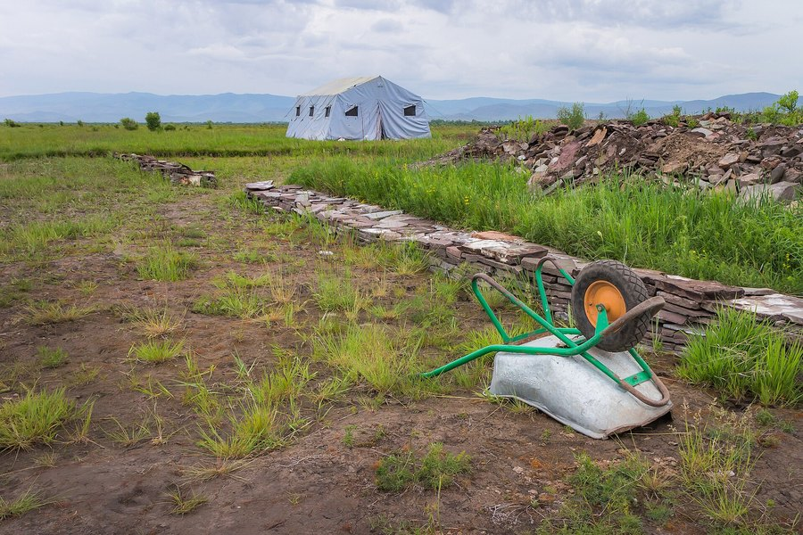
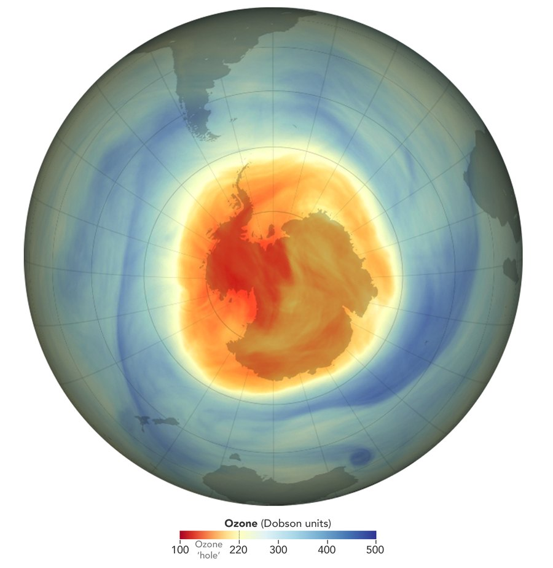

Москва · понедельникВыпуск с совета директоров и с курганаЦена: бесплатно
TheSéance Times
газета для тех, кто разговаривает с прошлым
№ 013 · 9 ноября 2026Тринадцатый выпускЧтение: 14 минут
Машина · главное
Роман с грифом
В воскресенье вечером совет директоров Nvidia объявил независимое расследование: его основатель и главный исполнительный директор Дженсен Хуанг, по сообщениям, стал целью иностранной разведки. Речь идёт о его отношениях с топ-менеджером Megaspeed Элис Хуанг — компания-клиент, которую Минторг США подозревает в контрабанде чипов в Китай.
Событие — 8 ноября 2026 · The Verge, TechCrunch · 7 минут
Формулировка заявления совета директоров сухая до канцелярита: «Совет NVIDIA начинает независимое расследование в свете недавних сообщений о том, что основатель и главный исполнительный директор Дженсен Хуанг стал целью усилий иностранной разведки. Расследование будет вести комитет независимых директоров при содействии внешнего независимого юриста».
Дальше в том же заявлении идёт то, что делает историю интересной. Совет сообщает, что «не имеет оснований полагать», будто национальная безопасность или секреты Nvidia были скомпрометированы; что Хуанг «полностью поддерживает» проверку и обязался сотрудничать; что совет «уверен в Дженсене и его команде». То есть расследование открыто, а вывод уже произнесён — до того, как комитет успел прочитать первый документ.
Что известно до воскресенья. В октябре The New York Times сообщила, что у Хуанга сложились «близкие отношения» с топ-менеджером Megaspeed Элис Хуанг. Позже он признал в записке, разосланной сотрудникам, что отношения были романтическими. По данным американских официальных лиц, она передавала сведения напрямую в Пекин; в меморандуме, который в этом году ходил среди политиков США, утверждалось, что её завербовало Министерство государственной безопасности Китая — чтобы шпионить за главой Nvidia.
Дженсен Хуанг, 2024 год: фотография сделана в Брюсселе, на встрече с верховным представителем ЕС Жозепом Боррелем. Фотография: Peter Dasilva, CC BY 4.0, Wikimedia Commons.
Записка, которую опубликовал TechCrunch, короткая и без юридических оговорок: «Я должен извиниться перед семьёй и всеми вами. Я был неверен жене. Мои действия ранили её и наших детей. Этому нет оправдания. Мне очень жаль». И дальше, с обращением к коллегам, совету, партнёрам и акционерам: «Вы заслуживаете лучшего от меня».
Второй участник истории — компания Megaspeed, сингапурский чиповый бизнес и клиент Nvidia. Именно она находится под следствием Минторга США: ведомство проверяет, не занималась ли компания контрабандой ИИ-ускорителей в Китай. Ограничения на продажи чипов в Китай вводили обе администрации; нынешняя их ослабила, но самые мощные ускорители для китайских фирм по-прежнему закрыты, а работать с ними разрешают отдельным компаниям — по одной, решением Минторга. Получается, что роман был не просто романом: он связывал главу поставщика с получателем, которого проверяет то же ведомство, что выдаёт разрешения.
Что объявлено8 ноября 2026: независимое расследование совета директоров Nvidia; ведёт комитет независимых директоров с внешним юристом.
Что признал CEOРомантические отношения с Элис Хуанг, бывшей топ-менеджером Megaspeed; извинение в записке сотрудникам.
Кто такая MegaspeedСингапурская чиповая компания, клиент Nvidia; Минторг США расследует возможную контрабанду ИИ-чипов в Китай.
Что утверждает меморандумЭлис Хуанг завербована Министерством государственной безопасности Китая для шпионажа за CEO Nvidia; официальные лица США считают, что сведения уходили в Пекин.
Позиция совета«Нет оснований полагать», что нацбезопасность или секреты компании скомпрометированы; Хуанг сотрудничает.
Чего нетСроков проверки, её объёма, данных о поставках и о том, что именно обсуждалось в разговорах, которые теперь изучают.
Что здесь факт, а что — обещание
Факт: заявление совета директоров от 8 ноября, записка Хуанга сотрудникам, следствие Минторга по Megaspeed, статус компании как клиента Nvidia. Факт: прежняя позиция компании — что взаимодействия были «не необычными» и что секретные сведения клиентам не передаются.
Не факт: что Элис Хуанг действительно работала на китайскую разведку — так утверждает меморандум, а не приговор; что секреты утекли — совет прямо говорит, что оснований так думать нет. Обещание: «полное сотрудничество» и «уверенность совета» — это слова, а не результат проверки. Неизвестно: кто инициировал расследование, кто войдёт в комитет и когда будет отчёт.
Расследование началось с заявления о доверии. Дальше вопрос простой: что именно совет узнает такого, чего не знал в воскресенье вечером.
Редакционный вывод
Практический смысл для того, кто арендует вычисления, а не владеет акциями, укладывается в два пункта. Первое: у крупнейшего поставщика ускорителей проверяют не бухгалтерию, а человека, который принимает решения о распределении поставок. Пока идёт расследование, эти решения никуда не исчезают — но становятся медленнее и осторожнее, а значит, обещание «мощности к весне» стоит делить на два, как и любое обещание, за которым стоит один человек с отвлечённым вниманием.
Второе: держать второй путь к моделям — не паранойя, а обычная диверсификация. Один провайдер, один маршрут, один график поставок — это одна точка отказа; локальная модель на своей видеокарте отвечает по крайней мере за часть работы, когда чужая цепочка начинает выяснять отношения внутри себя.
И деталь, которая переводит историю из разряда корпоративных в разряд человеческих. TechCrunch отдельной строкой отмечает: другие компании ИИ-бума предупреждают сотрудников о возможных шпионах — в том числе о тех, кто предлагает секс или романтику. Это не мораль про верность. Это описание вектора атаки: ценность имеют не серверы, а люди с доступом, и обходят их не через брандмауэр. В корпоративном заявлении это звучит как «усилия иностранной разведки»; в записке сотрудникам — как «я был неверен жене». Оба текста описывают одно и то же событие, просто с разных концов.
Сеанс
Второй материал · 5 минут
Дым над курганом
В кургане Туннуг-I в Уюкской долине нашли около тысячи семян конопли и волосы, в которых сохранились следы её соединений. Это самое раннее прямое свидетельство того, что человек употреблял коноплю ради опьянения, — и, судя по всему, делал это на похоронах.
Событие — раскопки 2017–2026 · Science, 5 ноября 2026 · 5 минут
Статья вышла в Science 5 ноября: «Direct evidence for psychoactive cannabis use 2800 years ago», том 394, страницы 649–653. Первый автор — Джино Каспари, археолог из Института археологических наук Бернского университета и Института геоантропологии Макса Планка в Йене. Слово «direct» в заголовке — главное: до сих пор о древнем употреблении психоактивных растений судили по косвенным признакам — по сосудам, по остаткам на камнях, по текстам. Здесь впервые есть тело.

Курган Туннуг-I, Уюкская долина, Тува: расчищенная каменная кладка по краю насыпи, отвал, рабочая тачка и лагерь экспедиции на фоне сопок. Снимок сделан 22 июня 2026 года, на десятый сезон раскопок. Фотография: Александр Новиков, CC BY-SA 4.0, Wikimedia Commons.
Курган Туннуг-I в Уюкской долине на юге Сибири раскапывают с 2017 года. Это погребение раннескифского времени, VIII–IX века до нашей эры, и оно не рядовое: «княжеская» гробница, где на насыпи когда-то уложили восемнадцать лошадей, а позже нашли следы ещё нескольких десятков. Разрозненные человеческие кости в комплексе тоже есть — Каспари говорит о «весьма вероятных» человеческих жертвах.
В усыпальнице археологи обнаружили около тысячи семян конопли. Шесть из них датировали радиоуглеродным методом; вместе с другими датировками это даёт начало VIII века до нашей эры. Сами по себе семена ничего не доказывают: коноплю выращивали на волокно и на масло, а семена могли попасть в могилу с одеждой или подстилкой. Нужен был второй аргумент — и его нашли в волосах.
В центральной погребальной камере сохранились человеческие волосы — вечная мерзлота работает лучше любого архива. Их прогнали через масс-спектрометрию высокого разрешения. В нескольких образцах обнаружили каннабинол — вещество, которое образуется, когда тетрагидроканнабинол окисляется на воздухе, — и более слабые сигналы, совпадающие по массе с ТГК. «Вопрос был такой: можем ли мы провести тест на наркотики человеку, умершему 2800 лет назад? — вспоминает Каспари в интервью Chemical & Engineering News. — Оказалось, можем».
Дальше начинается работа сомнения, и она интереснее результата. Возражение первое: коноплю могли жечь просто как благовоние, чтобы перебить запах разлагающихся тел и жертвенных лошадей. Каспари отвечает: «Есть куда лучшие растения для благовоний. Но люди действительно имели это в организме — а если жечь, психоактивный эффект наступает сразу, как только вдыхаешь дым». Возражение второе, куда более мрачное: коноплёй могли усыплять жертв перед тем, как с ними случилось плохое. «Но мы не можем это доказать», — добавляет он.
ПубликацияScience, 394, 649–653 (2026), DOI 10.1126/science.aeg3800; вышла 5 ноября 2026.
КтоДжино Каспари (Бернский университет; Институт геоантропологии Макса Планка, Йена) с соавторами — Тимур Садыков, Дарья Фомичева, Егор Блохин и другие.
ГдеКурган Туннуг-I, Уюкская долина, Республика Тыва; раскопки с 2017 года; VIII–IX века до н. э.
ДатировкаНачало VIII века до н. э. — радиоуглеродный анализ шести семян вместе с другими датировками.
НаходкиОколо тысячи семян (CNN сообщает о 1400); в волосах — каннабинол и слабые сигналы ТГК.
Чего не знаютСколько ТГК было в тех растениях, отбирали ли их специально и как именно употребляли — дымом или иначе.
Контекст, без которого находка выглядит случайной. Геродот в четвёртой книге «Истории» описывает скифский обряд: семена конопли бросают на раскалённые камни в войлочном шатре, от них идёт такой пар, что «никакая эллинская паровая баня не сравнится», а скифы кричат от удовольствия. Долгое время это считали этнографической байкой — слишком уж литературно. Курган Туннуг-I находится ровно в той степи, о которой писал Геродот, и датируется временем, от которого его отделяют несколько веков. Теперь у байки есть химия.
Что осталось за пределами статьи, но важно для понимания масштаба. Исследователи не знают, было ли то растение сильнее или слабее нынешнего, и не знают, отбирали ли скифы сорта по действию, а не по волокну. Поэтому команда уже секвенирует ДНК из семян: сохранность в мерзлоте оказалась исключительной. «Это поможет узнать больше об истории одомашнивания и распространения этой культуры — скоро», — говорит Каспари. Другими словами, у истории будет продолжение, и оно, скорее всего, окажется не про наркотики, а про торговлю: конопля шла по той же степи, что и золото, кони и бронза.
И маленькая деталь, ради которой стоит держать этот сюжет в голове. Археология обычно находит то, что люди сделали: горшки, ножи, украшения, стены. Здесь она нашла то, что люди чувствовали, — причём в самом неподходящем для этого месте, в могиле, где всё должно было истлеть. Мерзлота сохранила волосы, волосы сохранили молекулы, молекулы сказали то, чего не сказали ни кости, ни золото. Три тысячи лет назад кто-то хоронил знатного человека, жёг коноплю и вдыхал дым; сегодня масс-спектрометр подтверждает, что дым был не для запаха.
Книги
Литература · 5 ноября
Десять слов
Prix Goncourt · 5 ноября 2026
Филипп Жаенада получил Гонкуровскую премию 2026 года за роман «L'Inconnue du quai de Javel» — «Незнакомка с набережной Жавель». Книга заново расследует нераскрытое убийство 1949 года: Луиза Кансо, 29 лет, бретонская натурщица, которую в Монпарнасе называли «женщиной со ста портретов». Жаенада побеждал в первом туре, шесть голосов против трёх у Сильвена Прюдома; до этого четыре раза был в шорт-листе.
Через день после награждения, в среду, он пришёл на France Inter и рассказал, что обращался к искусственному интеллекту три раза. Первый — чтобы вставить в текст предложение, написанное ChatGPT: «поиграть с читателем». Второй — чтобы подшутить над ChatGPT, который выдал «совершенно абсурдные ответы» про одну техническую деталь. Третий — для исследования. Какое именно предложение написала машина, он накануне открыл только членам жюри: «Если это выйдет наружу, я буду знать, откуда».
В пятницу пришлось уточнять — уже заявлением для AFP через издательство Flammarion. «Смехотворно абсурдно думать хотя бы полсекунды, что я использовал генеративный ИИ, чтобы написать в этой книге хоть что-нибудь», — сказал он и объяснил: игра с ИИ была задумана до начала работы, а не появилась задним числом. Речь идёт о десяти словах. С момента выхода книги читатели прислали десятки догадок, где именно спрятано это предложение; раскрыть его автор обещал в ответ на «глупость, предательство и недобросовестность».
ПремияГонкур 2026, объявлена 3 ноября; роман «L'Inconnue du quai de Javel»; 6:3 в первом туре.
СюжетНераскрытое убийство 1949 года: Луиза Кансо, 29 лет, натурщица из Монпарнаса.
Три обращения к ИИВставное предложение ChatGPT; пародийный фрагмент про абсурдный технический ответ; исследование.
Размер вставкиДесять слов; десятки читательских догадок; жюри узнало о предложении в день награждения.
Цитата«Я не думаю, что ИИ можно сдержать. Мы не можем делать вид, что его не существует. Его нужно использовать — но сначала признать, а главное — приручить».
Для того, кто сам публикует книги, здесь важна не этика, а механика скандала. Жаенада сделал ровно то, чего требуют все разговоры о прозрачности: сказал сам, до того как кто-то нашёл. И всё равно получил неделю объяснений — потому что признание в использовании ИИ читается не как техническая деталь, а как признание в обмане, даже когда обмана не было. Практический вывод скучный и полезный: решайте заранее, будете ли вы говорить о каждом обращении к модели, и если да — говорите в тексте, а не в интервью после премии. Десять слов не делают литературу; делают её разговоры вокруг десяти слов.
Инструментарий
ИИ и права · 8 ноября
Голос в аренду
Suno · 8 ноября 2026
Против Suno подали ещё два иска. Первый — от правообладателей музыки Элвиса Пресли: юристы ссылаются на закон штата Теннесси с аббревиатурой ELVIS (Ensuring Likeness Voice and Image Security), который прямо запрещает ИИ-компаниям клонировать голос певца. Второй — от издателя нескольких крупнейших записей Эминема. Оба иска построены одинаково: компания незаконно производит музыку и тексты, имитирующие конкретных артистов.
Формулировки в жалобе стоит прочитать целиком, они написаны не для суда, а для прессы: «Suno механически закодировала в себе личности артистов, их тяжёлый труд, креативность и время — и направила всё это на конвейер холодной наличности». И дальше: «Гонка Suno ко дну имеет целью сделать человеческое творчество устаревшим, холодно реплицируя без лицензии за секунды то, на что уходят годы учёбы, борьбы, поддержания формы и бесконечных попыток сделать лучше».
Ответ компании дала представитель Cat McCormack: Suno существует, чтобы помогать людям создавать новую оригинальную музыку, а не торговать чужими именами и образами; несанкционированное использование работ артистов запрещено; запросы с именами конкретных исполнителей и их песнями не принимаются, а загружаемые аудиофайлы и тексты проверяют сторонние подрядчики.
Кто судитсяПравообладатели музыки Элвиса Пресли; издатель части крупнейших записей Эминема.
Правовая опораЗакон Теннесси ELVIS Act — запрет на клонирование голоса; в иске Эминема — имитация записей и текстов.
ПредшественникИск Джейсона Исбелла и других в сентябре 2026 года; в нём не было прямого обвинения в нарушении авторского права.
Всего исковК новым добавляются уже поданные Sony, UMG, Исбеллом и Reservoir.
Позиция SunoЗапрет на запросы с именами артистов; проверка загрузок и текстов сторонними сервисами.
Юридически здесь происходит смена предмета спора, и она важнее конкретной компании. Раньше спорили о записях: скопирована фонограмма или нет. Теперь спорят о личности: голос, манера, узнаваемость — то, что в авторском праве защищено хуже, чем ноты. Для тех, кто делает аудиокниги, подкасты или музыку с помощью моделей, это означает простую вещь: лицензия на текст, лицензия на запись и право на голос — три разных разрешения, и одно не покрывает два других. И ещё: запросы вида «в стиле такого-то» платформы уже запрещают сами — а суд может прочитать лог промптов как намерение. Логи стоит хранить, но не для того, чтобы ими хвастаться.
Небо
Космос и Земля · 9 ноября
Седьмая дыра
NASA · 9 ноября 2026
Озоновая дыра 2026 года стала седьмой по площади за 48 лет наблюдений — если считать по среднему размеру за сезон максимального разрушения озона, с 7 сентября по 13 октября. Максимальной площади она достигла 18 сентября. При этом по глубине она уступала другим крупным дырам в истории измерений: большой, но не особенно глубокий год.

Дыра 18 сентября 2026 года: день максимальной площади. Красным и жёлтым показаны области, где концентрация озона опустилась ниже исторического порога 220 единиц Добсона. Изображение: NASA Earth Observatory, Lauren Dauphin, по данным NASA Ozone Watch; общественное достояние.
Причина — погода, а не прорыв в химии. В 2026 году над Антарктикой сложился необычно сильный полярный вихрь: стратосфера оказалась холоднее обычного, а чем холоднее, тем активнее идёт разрушение озона на полярных стратосферных облаках. Отсюда и расхождение между площадью и глубиной: рекорды по этим двум показателям никогда не совпадали. Самая большая дыра была в 2006 году, самая глубокая — в 1994-м, когда 30 сентября концентрация упала до 73 единиц Добсона.
МестоСедьмая по площади за 48 лет наблюдений; средний размер считали с 7 сентября по 13 октября.
Пик площади18 сентября 2026 года; по глубине год не был рекордным.
ПричинаНеобычно сильный антарктический полярный вихрь и холодная стратосфера.
Как считаютПорог 220 единиц Добсона; приборы TOMS, OMI, OMPS; «дыра» — метафора, а не пустота.
ПрогнозВозврат к уровню 1980 года ожидается в 2070-х; около 80 % хлора в стратосфере — антропогенного происхождения.
Долгая часть истории — единственная в экологии, у которой есть договорный финал. Хлорфторуглероды, которые десятилетиями спокойно жили в тропосфере, в стратосфере под ультрафиолетом распадаются и высвобождают хлор, разрушающий озон. В 1987 году их запретили Монреальским протоколом — и это сработало: в 2018 году учёные впервые показали по спутниковым данным, что истощение озона над Антарктикой за 2005–2016 годы уменьшилось примерно на 20 %, а в 2019-м погодная аномалия дала самую маленькую дыру с 1982 года. Модели говорят, что к уровню 1980-го слой вернётся в 2070-х: договору на это понадобится около века, потому что молекулы живут долго.
Практический смысл этой заметки — в привычке, которая пригодится не только в климатологии. Один год ничего не говорит о тренде: площадь и глубина гуляют от стратосферной температуры, и заметить восстановление можно только на длинном ряду. Ровно та же ошибка — принимать шум за сигнал — стоит дорого в трейдинге, где один хороший месяц легко принять за систему. Дыра 2026 года большая и неглубокая; это не провал политики и не доказательство катастрофы. Это погода поверх медленной химии, и именно так её и надо читать.
Экран
Кино · 9 ноября
Генерал в двух частях
Variety · 9 ноября 2026
Двухчастный военный эпос Антонена Бодри о Шарле де Голле получил американскую премьеру в субботу — на Американском фестивале французского кино в Лос-Анджелесе, в театре Гильдии режиссёров. Обе части, каждая длиннее двух с половиной часов, показали подряд при полных залах; после финала зал стоял семь минут.
Производство стоило 74 миллиона евро — для Pathé это одна из самых смелых ставок после «Графа Монте-Кристо» и двухчастных «Трёх мушкетёров». Де Голля играет Симон Абкарян, Черчилля — Саймон Расселл Бил, Рузвельта — Кэмпбелл Скотт. Бодри и соавтор сценария Беренис Вила, по данным Variety, прочли больше 150 книг и работали в архивах, восстанавливая обстоятельства.
Во Франции фильм стартовал медленно, а потом разошёлся на слухах: больше шести миллионов билетов. В Великобритании первая часть, «De Gaulle: Resistance», сейчас — самый кассовый франкоязычный фильм года. И отдельная редкость: картину только что купили для Китая, где прокатчик Light Films выпустит её в конце ноября.
Тот самый 1942 год: генерал Шарль де Голль принимает смотр личного состава Королевских ВВС, март 1942-го — время, когда «Свободная Франция» ещё собирала силы в Лондоне. Фотография: официальный фотограф RAF, общественное достояние, Wikimedia Commons.
В США Samuel Goldwyn Films выпускает картину в кинотеатрах в Нью-Йорке, Лос-Анджелесе, Чикаго, Сан-Франциско, Вашингтоне, Сиэтле, Остине, Миннеаполисе, Хьюстоне и Атланте — и одновременно по всей стране на платном видео по запросу. Вторая часть, «De Gaulle: Liberty», выйдет в начале декабря. Продюсер и глава прокатчика Питер Голдуин объясняет ставку без снобизма: «Фильмы доказали себя, а аудитории есть аудитории — американские они или французские». И добавляет: «Единственное, что делает это артхаусом, — иностранный язык».
Фильм«De Gaulle», две части; режиссёр и соавтор сценария Антонен Бодри, соавтор — Беренис Вила.
Бюджет74 млн евро; производство Pathé.
В роляхСимон Абкарян (де Голль), Саймон Расселл Бил (Черчилль), Кэмпбелл Скотт (Рузвельт).
Франция и БританияСвыше 6 млн билетов во Франции; первая часть — самый кассовый франкоязычный фильм года в Британии.
КитайПрава куплены, прокатчик Light Films, релиз в конце ноября.
СШАПремьера 7 ноября на фестивале в Лос-Анджелесе, семь минут овации; прокат в десяти городах плюс VOD; вторая часть — начало декабря.
Что здесь интересно помимо цифр. История де Голля для американского зрителя — почти пустая клетка: Рузвельта и Черчилля там знают, а французского генерала, который в 1940-м отказался признать капитуляцию и собирал сопротивление из ничего, — нет. Фильм, судя по описанию, строит драму не на сражениях, а на трениях внутри союзного лагеря: де Голль против Черчилля, Черчилль против Рузвельта. Это редкий случай, когда военный эпос продаётся не батальными сценами, а политическим характером — и, что важнее для рубрики, выходит одновременно в кино и на видео: пять часов исторического кино не влезают в прокатную сетку, зато влезают в вечер дома.
Тяжёлый звук
Музыка · 7 ноября
Двадцать лет
Billboard · 7 ноября 2026
Юбилейное переиздание «The Black Parade» принесло My Chemical Romance первое в истории группы первое место в Billboard 200 — через двадцать лет после выхода альбома. В 2006-м пластинка остановилась на втором. Переиздание прыгнуло со 139-й строки сразу на первую в чарте от 7 ноября: 78 тысяч эквивалентных альбомных единиц за неделю, закончившуюся 29 октября, — рост на 653 %, из них 68 тысяч пришлись на чистые продажи, рост на 2082 %.
Это два рекорда сразу. Первый: самый долгий путь альбома к первому месту — двадцать лет; прежнее достижение принадлежало сборнику Тоби Кита «35 Biggest Hits» с 15 годами и 9 месяцами, и случилось оно после смерти музыканта. Второй: первый юбилейный альбом, возглавивший Billboard 200.
ЧтоПереиздание «The Black Parade» к 20-летию; первое место в Billboard 200, чарт от 7 ноября 2026.
Цифры78 000 эквивалентных единиц (+653 %); 68 000 чистых продаж (+2082 %); прыжок с 139-й строки.
РекордыСамый долгий путь к № 1 — 20 лет; первый юбилейный альбом на вершине чарта.
Кто помогОливия Родриго опустилась на второе место с 64 000 единиц (−15 %); её менеджер говорит, что она «не мешала».
ДальшеДжерард Уэй 30 октября в Hollywood Bowl: в следующем году группа хочет записать альбом и, вероятно, не играть концертов.
Формально помогла Оливия Родриго: её пластинка «you seem pretty sad for a girl so in love», три недели державшая первое место, опустилась на второе с падением на 15 %. Менеджер группы Брайан Шехтер сказал The New York Times, что она могла бы попытаться удержать корону — выпустить собственное переиздание или новые версии, — но не стала: «Она могла бы легко попытаться не дать группе стать № 1, но, насколько я видел, ничего не делала. Она просто дала этому сложиться органично».
Что из этого следует для тех, кто продаёт тексты, а не пластинки. Юбилейное издание — не ностальгия, а товар: тот же материал, упакованный заново, продаётся лучше нового, потому что покупатель хочет объект, а не доступ. Двадцать лет ожидания первого места — не история про качество музыки; это история про то, что аудитория возвращается к вещам, которые успела полюбить в пятнадцать, и платит за право подержать их в руках снова. Если у вашей книги есть десятилетие и своя аудитория — юбилейный тираж с новым предисловием может сделать то, чего не сделал новый роман.